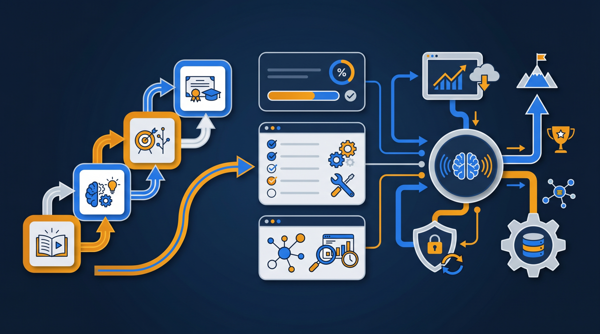
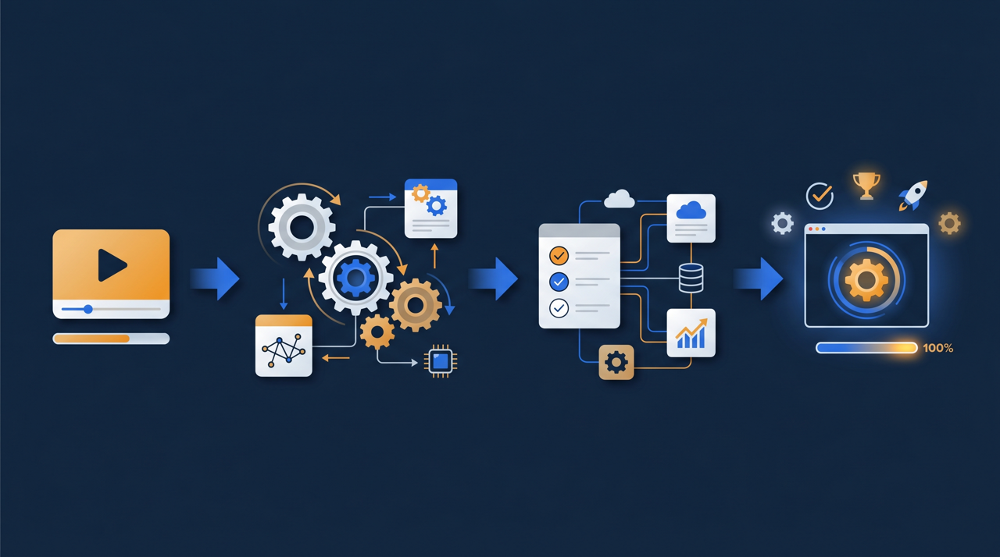
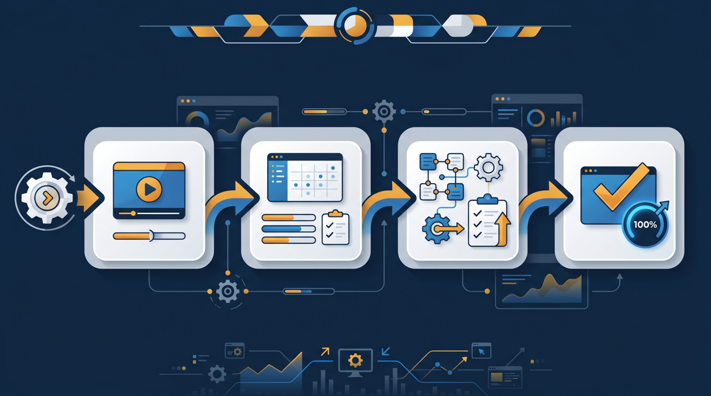

「相談が増えても、自分の時間は増えない」——士業やコンサルタントの多くが、この壁にぶつかります。知識はあるのに、それを届けられるのは目の前の一人だけ。時間を切り売りするかぎり、収益には天井があります。そこで考えたいのが、知識を講座にして繰り返し届ける「研修事業」です。この記事では、専門知識を商品に変え、労働集約から一歩抜け出すための始め方を、コンテンツ設計から整理します。

なぜ士業・コンサルに研修事業が向いているのか
士業やコンサルタントの仕事は、突き詰めると「自分の知識と時間を提供すること」です。相談に乗り、書類を作り、助言をする。どれも価値の高い仕事ですが、一つ大きな弱点があります。それは、自分が動いた分しか収益にならない、ということです。1日は24時間しかありませんから、対応できる件数には限りがあり、収益にも自然と天井ができます。これがいわゆる労働集約の働き方です。
ここで研修事業が効いてきます。自分が繰り返し説明している知識を、一度しっかり講座にまとめてしまえば、その講座は何度でも、何人にでも届けられます。受講者が10人でも100人でも、本人が改めて説明し直す必要はありません。つまり、自分の時間と収益を切り離せるわけです。これは、時間に縛られてきた専門家にとって、大きな意味を持ちます。
しかも、士業・コンサルは研修事業ととても相性がいいんです。理由はシンプルで、すでに「人に教える内容」を山ほど持っているから。日々の実務で繰り返し説明していること、クライアントから何度も聞かれること——これらはそのまま講座の素材になります。ゼロから新しい商品を考えるのではなく、頭の中にあるものを整理して形にする。だから、他の業種が新規事業を立ち上げるのに比べて、踏み出しやすい面があるんですね。J-Net21などの創業・新規事業の支援情報でも、自分の強みを生かしたサービスの事業化は現実的な選択肢として紹介されています。
加えて、専門家は「信頼の土台」をすでに持っていることが多いものです。資格や実績、これまでの仕事を通じて積み上げた評判は、講座を売るうえで強い後押しになります。同じ内容でも、誰が教えるかで受け取られ方は変わりますよね。「あの分野の専門家が体系的にまとめた講座」というだけで、受講を検討する理由になる。ゼロから知名度を作らなければならない人に比べて、士業・コンサルは出発点で一歩前にいる、と考えられます。この土台を生かさない手はありません。
研修事業が解決する「専門家ならではの悩み」
研修事業は、単に収益を増やすだけの話ではありません。専門家が抱えがちな悩みを、いくつかまとめて解きほぐす力を持っています。
- 自分の時間に縛られない収益の柱が生まれる
- 同じ説明を毎回繰り返す負担が減り、本業に集中できる
- 講座を通じて専門家としての信頼・認知が広がる
- 基礎を講座に任せ、個別相談ではより踏み込んだ対応ができる
- 知識が形に残り、引き継ぎや事業の継続にも生かせる
とくに大きいのが、「同じ説明の繰り返し」から解放される点です。専門家であれば、初めてのクライアントにはたいてい同じ基礎から説明します。制度の仕組み、手続きの流れ、よくある質問への回答——毎回ゼロから話すのは、地味に時間を奪われますよね。これを講座にしてしまえば、基礎は講座で学んでもらい、個別の相談ではその先の踏み込んだ話に集中できます。本業の質まで上がる、というわけです。
もう一つ見落とされやすいのが、信頼と認知への効果です。講座という形で知識を体系的に示すと、「この分野に詳しい専門家」という印象が強まります。受講した人が本業の依頼につながることもありますし、講座そのものが名刺代わりに働くこともある。研修事業は、収益の柱であると同時に、本業を支える信頼の土台にもなりうるんです。
専門知識を講座に変える4つのステップ
では、具体的にどう進めればいいのでしょうか。最初から大きな講座体系を作ろうとすると重くなるので、1本の講座を作り切るところから始めるのがおすすめです。
ステップ1：繰り返し説明しているテーマを1つ選ぶ
まずは、実務で何度も説明していることや、クライアントから繰り返し聞かれることを書き出します。その中から、対象者がつまずきやすく、体系的に学びたいニーズがありそうなテーマを1つ選びます。すでに頭の中にあるものを選ぶのがコツです。新しく勉強して作るのではなく、いつも話していることを形にする——このほうが、無理なく作り切れます。
ステップ2：対象者と到達点を決める
選んだテーマについて、「誰に向けた講座か」と「受け終わったら何ができるようになるか」を決めます。同じ知識でも、初めて学ぶ人向けと、ある程度知っている人向けでは、説明の深さが変わりますよね。対象者がぼやけたまま作ると、誰にも刺さらない講座になりがちです。到達点を先に決めると、入れるべき内容と省いていい内容の線引きがはっきりします。普段の相談で「どういう人がどこでつまずくか」を見てきた専門家なら、この対象者と到達点の設定は、実は得意なはずなんです。日々の実務がそのまま設計の材料になります。
ステップ3：話している内容を動画とテストにする
普段クライアントに説明している内容を、動画にしていきます。きれいなスタジオ収録である必要はなく、いつも話していることを順番に話していくイメージで構いません。要点ごとに区切り、理解できたかを測る簡単な確認テストを添えると、受講者が学び切りやすくなります。「説明したら確認する」という流れを作ると、受講者の理解が定着しやすい傾向があります。長い説明を一本にまとめず、テーマごとに短く区切っておくと、受講者がスキマ時間でも学びやすく、後から内容を差し替えるときにも扱いやすくなります。
ステップ4：申込から配信までの仕組みを整える
最後に、受講者が申し込んで学べるようにする仕組みを整えます。有料の講座として継続的に提供するなら、受講者の登録・進捗の把握・修了の記録ができる環境があると安心です。学習管理システム（LMS）を使えば、申込から配信、受講管理までをまとめて扱え、本人が事務作業に追われずに済みます。専門家が本来の知識提供に集中できる状態を、仕組みの面から支えるわけです。

受講者をどう集め、どう広げるか
講座ができても、届ける相手がいなければ収益にはなりません。集め方を整理しておきましょう。
最初の受講者は、すでに接点のある相手から探すのが現実的です。これまで対応してきた既存のクライアント、問い合わせをくれた層、メールマガジンやSNSで発信を見てくれている読者・視聴者——こうした「すでに自分を知っている人」に案内するのが、もっとも始めやすい方法です。専門家として発信を続けてきた人ほど、その積み重ねが受講者につながりやすい傾向があります。
いきなり広く宣伝するより、近い相手に届けて反応を見るほうが無理がありません。最初の数人が受講し、「役に立った」という声が返ってくれば、それが次の案内材料になります。そこで得た手応えをもとに、対象を少しずつ広げていく。研修事業は、一気に大きく始めるより、小さく試して育てていくほうが定着しやすいんです。最初の受講者からもらった感想は、講座の改善に役立つだけでなく、これから検討する人への何よりの後押しにもなります。身近な相手から始めることには、こうした副次的な効果もあるわけですね。受講者の声が次の受講者を呼ぶ、という流れを最初の数人で作れるかどうかが、その後の広がりを左右します。
広げていく段階では、講座を増やすことも考えられます。最初の1本がうまくいけば、「この内容も学びたい」という声が出てくることが多いものです。基礎の講座、応用の講座、特定のテーマに絞った講座——というように段階を作ると、受講者が次に進みやすくなります。経済産業省の電子商取引に関する調査でも、オンラインでのサービス提供は広がりを見せており、専門知識をオンライン講座として届ける環境は整いつつあります。中小企業庁やJ-Net21などの公的な情報も、新たなサービスを事業化する際の進め方の参考になります。
講座の届け方も、一通りではありません。個人が一人ずつ受講する形のほか、企業がまとめて社員に受けさせる形や、顧問先に紹介する形も考えられます。とくに士業・コンサルは、顧問先や取引先という「すでに信頼関係のある企業」とのつながりを持っていることが多いものです。その企業の社員教育の一部として講座を使ってもらえれば、一人ずつ売るより安定した収益につながることもあります。誰に、どういう単位で届けるか——この組み合わせを考えると、同じ講座でも収益の作り方に幅が出てきます。

始める前に押さえておきたいこと
研修事業は魅力的ですが、走り出す前に整理しておきたい点もあります。気をつけておくと、つまずきにくくなります。
まず、本業との線引きです。講座で基礎を伝えるのはよいとして、本業として提供すべき個別の対応まで講座に詰め込むと、本業の依頼が減ってしまうこともあります。講座で伝えるのは「広く役立つ基礎や考え方」、個別対応に残すのは「その人の事情に応じた踏み込んだ助言」——この線引きを最初に決めておくと、研修事業と本業が食い合わずに済みます。
次に、完璧を最初から求めないことです。最初の講座は粗くて当然です。一本作って届け、受講者の反応を見ながら直していく。動き出してしまえば、どこが分かりにくいか、何が足りないかが見えてきます。作って、届けて、直す——この回し方ができると、講座は使うほど良くなっていきます。
そして、配信や受講管理を仕組みに任せることです。せっかく時間から自由になるために研修事業を始めるのに、申込対応や受講管理に追われては本末転倒ですよね。学習管理システムのような仕組みに事務を任せ、本人は知識を磨くことと届けることに集中する。これが、研修事業を長く続けるための土台になります。なお、社内や顧問先の教育に研修コンテンツを使う場面では、人材開発支援助成金のように、訓練にかかった経費や賃金の一部を国が助成する制度を、関与先に案内できる場合もあります。専門家としての提供価値を広げる材料として、こうした制度も押さえておくとよいでしょう。
まとめ：知識を講座に変え、時間の天井を外す
士業・コンサルタントの働き方は、自分の時間を切り売りする労働集約になりやすく、収益に天井ができがちです。研修事業は、繰り返し説明している知識を講座にまとめ、一度作ったものを何度でも届けることで、自分の時間と収益を切り離す道を開きます。すでに「教える内容」を豊富に持っている専門家ほど、踏み出しやすい取り組みです。
進め方としては、繰り返し説明しているテーマを1つ選び、対象者と到達点を決め、話している内容を動画と確認テストにし、申込から配信までの仕組みを整える。受講者はまず既存の接点から集め、手応えを見ながら対象と講座を広げていく。本業との線引きを保ち、事務は仕組みに任せれば、研修事業は本業を妨げるどころか、信頼と認知の面でも本業を支える存在になります。
知識は、整え方しだいで時間に縛られない収益と、専門家としての信頼の両方に変わります。その第一歩として、まずは実務で繰り返し説明しているテーマを1つ選び、対象者と到達点を決めて1本の講座にまとめるところから始めてみるのがよいでしょう。
よくある質問
士業・コンサルタントの仕事は、自分の時間を切り売りする労働集約になりやすい面があります。研修事業として知識を講座にすると、一度作った講座を繰り返し届けられるため、自分が動かなくても収益が生まれる流れを作れます。本業の時間を圧迫せずに収益の柱を増やせる点が意味になります。
実務で繰り返し説明していることや、クライアントから何度も聞かれることほど講座に向いている傾向があります。手続きの進め方、制度の使い方、業務の基本といった、対象者がつまずきやすく、体系的に学びたいニーズのあるテーマが候補になります。すでに頭の中にあるものを整理する発想で選ぶと進めやすいです。
講座を一度作り込んでしまえば、配信そのものに本人の時間はほとんどかかりません。むしろ、これまで個別に説明していた基礎を講座に任せられるようになり、本業の対応に集中できるようになる場合があります。本業と相乗効果を持たせる設計にすると、妨げになりにくいと考えられます。
すでに接点のある既存のクライアントや、これまで問い合わせを受けてきた層から案内するのが始めやすい方法です。専門家としての発信を続けてきた人ほど、その読者・視聴者が受講者になりやすい傾向があります。最初から広く集めるより、近い相手から届けて手応えを見るほうが無理がありません。
有料の講座として継続的に提供するなら、受講者の登録・進捗の把握・修了の記録ができる仕組みがあると運用しやすくなります。学習管理システム（LMS）を使うと、申込から配信、受講管理までをまとめて扱え、本人が事務作業に追われずに済む環境を整えやすくなります。
まずは実務で繰り返し説明しているテーマを1つ選び、対象者と到達点を決めて1本の講座にまとめるところから始めると着手しやすいです。最初から多くの講座を揃えるより、1本を作って届け、反応を見ながら広げるほうが、無理なく続けられる傾向があります。